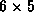
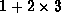
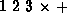
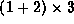
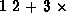

Data Structures and Algorithms
with Object-Oriented Design Patterns in C++
Data Structures and Algorithms
with Object-Oriented Design Patterns in C++Consider the following expression:
In order to determine the value of this expression, we first compute the sum 5+9 and then multiply that by 2. Then we compute the product  and add it to the previous result to get the final answer. Notice that the order in which the operations are to be done is crucial. Clearly if the operations are not done in the correct order, the wrong result is computed.
The expression above is written using the usual mathematical notation.
This notation is called infix notation.
What distinguishes this notation is the way that expressions
involving binary operators are written.
A binary operator
is an operator which has exactly two operands,
such as + and  .
In infix notation, binary operators appear
in between their operands.
.
In infix notation, binary operators appear
in between their operands.
Another characteristic of infix notation is that
the order of operations is determined by
operator precedence .
For example, the  (multiplication) operator
has higher precedence than does the + (addition) operator.
When an evaluation order is desired
that is different from that provided by the precedence,
parentheses , ``('' and ``)'',
are used to override precedence rules.
I.e., an expression in parentheses is evaluated first.
(multiplication) operator
has higher precedence than does the + (addition) operator.
When an evaluation order is desired
that is different from that provided by the precedence,
parentheses , ``('' and ``)'',
are used to override precedence rules.
I.e., an expression in parentheses is evaluated first.
As an alternative to infix,
the Polish logician
Jan  ukasiewicz
introduced notations which require neither parentheses
nor operator precedence rules.
The first of these,
the so-called Polish notation ,
places the binary operators before their operands.
I.e., for Equation
ukasiewicz
introduced notations which require neither parentheses
nor operator precedence rules.
The first of these,
the so-called Polish notation ,
places the binary operators before their operands.
I.e., for Equation  we would write:
we would write:

This is also called prefix notation, because the operators are written in front of their operands.
While prefix notation is completely unambiguous in the absence of parentheses, it is not very easy to read. A minor syntactic variation on prefix is to write the operands as a comma-separated list enclosed in parentheses as follows:

While this notation seems somewhat foreign, in fact it is precisely the notation that is used for function calls in C++:
operator+ (operator* (operator+ (5,9) ,2), operator* (6,5));
The second form of  ukasiewicz notation is the so-called
Reverse-Polish notation
(RPN ).
Equation is written as follows in RPN:
ukasiewicz notation is the so-called
Reverse-Polish notation
(RPN ).
Equation is written as follows in RPN:
This notation is also called postfix notation for the obvious reason--the operators are written after their operands.
Postfix notation, like prefix notation, does not make use of operator precedence nor does it require the use of parentheses. A postfix expression can always be written without parentheses that expresses the desired evaluation order. E.g., the expression , in which the multiplication is done first, is written ; whereas the expression  is written .
 Copyright © 1997 by Bruno R. Preiss, P.Eng. All rights reserved.
Copyright © 1997 by Bruno R. Preiss, P.Eng. All rights reserved.